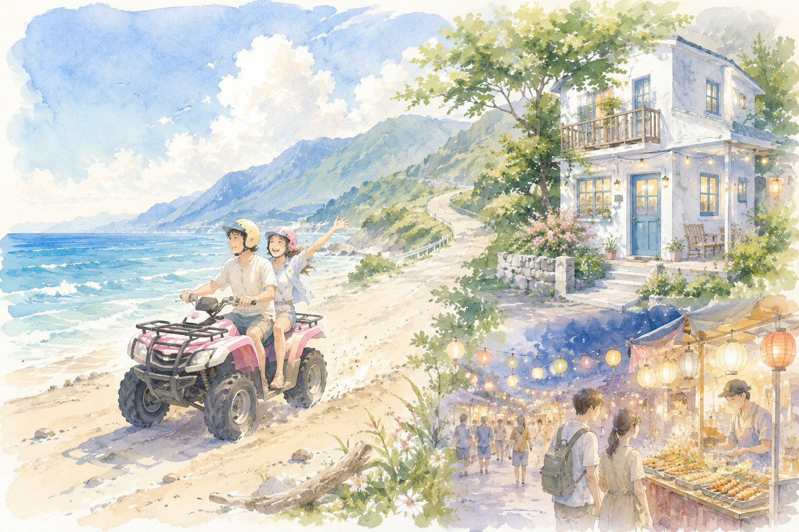
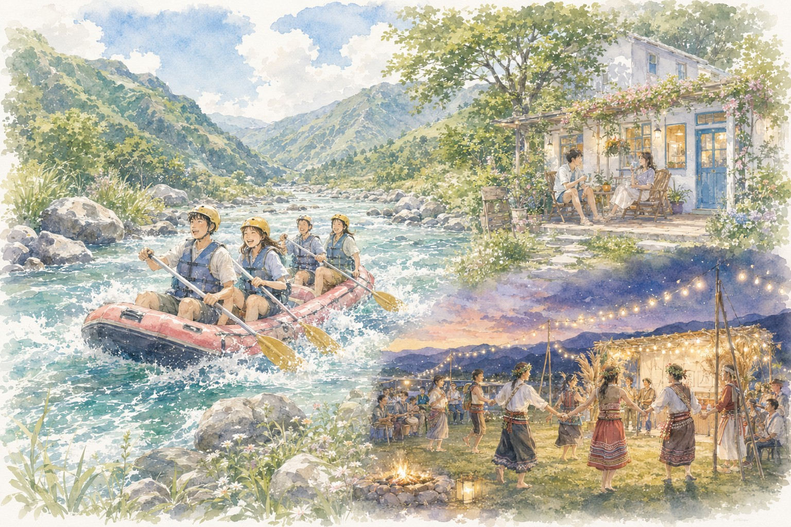
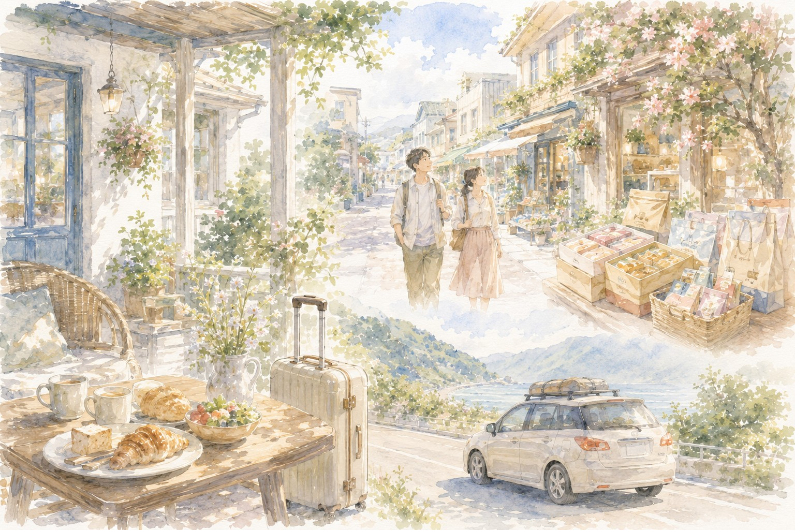

花蓮 3 天 2 夜｜已確認行程
7/17–7/19｜新竹出發，自駕花蓮旅行。住宿已確認為大石小宿，Day 1 沙灘車已預約 13:30 場次，Day 2 晚上安排德興大草坪豐年節。
住宿已確認 沙灘車已預約 Day 2 豐年節 Day 3 將軍府 Day 3 伴手禮已確認重點
- 住宿｜大石小宿，973花蓮縣吉安鄉太昌村太昌路522巷16號
- 入住｜7/17 下午 3:00
- 退房｜7/19 中午 11:00
- 早餐｜含 7/18、7/19 早餐
- 住宿訂金｜已付 6,000 元，餘額 13,800 元於入住後匯款
- 沙灘車｜7/17 13:30，已訂 4 台車，已付訂金 1,000 元
大石小宿導航已改用正確地圖座標，避免地址搜尋跑偏。
開啟大石小宿精準導航
Day 1｜7/17 新竹 → 花蓮
06:30
新竹出發
提早出發，避開車潮。車上可準備水、暈車藥與簡單早餐。
08:30
蘇澳／南方澳周邊休息補給
上廁所、買水，讓長輩與小孩活動一下。
11:30
午餐｜新城／北埔簡單小吃
不吃達基、不排套餐，以簡單小吃、麵飯、便當或自助餐為主。

Day 2｜7/18 泛舟＋豐年節
07:00
民宿早餐與集合
民宿含早餐，泛舟日建議吃飽但不要太油，確認換洗衣物與防水袋。
08:00
前往泛舟集合點
車程較長，建議提早出門，避免集合時間壓力。
09:30
年輕人泛舟體驗／長輩輕鬆版
年輕人參加泛舟；不參加泛舟者可安排瑞穗牧場、光復糖廠或輕鬆散步路線。

Day 3｜7/19 早餐・退房・將軍府・伴手禮・回新竹
08:30
民宿早餐／整理行李
慢慢收行李，避免第三天太趕。
12:30
市區午餐
將軍府結束後，可就近安排花蓮市區午餐、咖啡或好停車的餐廳。
13:30
伴手禮採買
可依大家喜好自行安排，不一定全跑，避免壓縮回程時間。
Day 3 伴手禮推薦
- 花崗山剝皮辣椒｜鹹香微辣、適合料理配菜
- 德利豆乾 站前店｜百年老店、經典豆乾伴手禮
- 洄瀾醬人｜特色醬料，可官網購買，兩罐免運
- 杜倫先生｜麻糬、甜點、蛋糕類伴手禮
- 曾記麻糬 中華門市｜花蓮經典麻糬、安全牌伴手禮
14:30
啟程回新竹
保留休息站與塞車緩衝，依路況調整。
出發前提醒
- 7/17 沙灘車為 13:30 場次，建議 13:00 前抵達報到。
- Day 1 午餐不要達基、不要套餐。
- Day 2 泛舟回民宿整理後，晚上前往德興大草坪豐年節。
- Day 3 新增將軍府，適合退房後市區輕鬆走走。
- 大石小宿、東大門夜市與德興大草坪已改用精準座標導航。